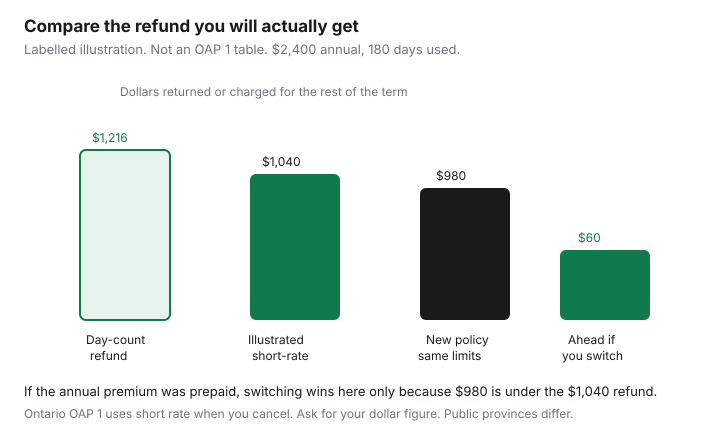

Insurance · Canada
Switching Auto Insurance Mid-Term in Canada: Cancellation Fees vs Rate Save Math
Drivers stay on an expensive auto policy because cancellation “probably has a fee,” and they never ask what the fee is in dollars. Sometimes the fee eats the savings. Sometimes it does not. The only way to know is to read the cancellation clause and put the refund next to a same-limit quote for the days that are left. Broker-versus-direct shopping, at renewal, is a different page. This one is the mid-term arithmetic, including the provinces where basic insurance is the plate.
FSRA tells Ontario drivers that switching partway through a term can trigger cancellation penalties. That warning is why you calculate. It is not a reason to refuse every mid-term move. A missing liability limit or a garaging address that is simply wrong can be more expensive than a short-rate slice.
Disclosure: Broker quote portals and auto insurance comparison sites are offer types. Saving Optimizer may earn a commission if we later add partner links. We do not currently claim insurer or broker partnerships. We do not sell policies. Comparison tools estimate. You bind with a licensed insurer, broker, or agent, or with the public insurer in your province. Education only.
Key takeaways
- The liability card identifies the policy. The cancellation math is in the policy booklet and on the certificate, including any minimum retained premium.
- Ontario’s OAP 1 says that if you cancel, the premium owed is calculated on a short-rate basis, which includes the insurer’s handling costs. A minimum premium on the certificate is not refunded. Ask for your dollar figure.
- Compare that refund, or the installments you will no longer pay, with the new premium for the same days and the same limits. A lower annual rate can still lose once short rate is included.
- British Columbia, Manitoba, and Saskatchewan tie basic cover to the plate. Do not import an Ontario short-rate story into a public basic policy. Optional cover is the part you can shop.
- Bind the new policy before the old one ends, the same day if needed. Do not drive in a gap.
Read cancellation provisions on your current pink slip / liability card
The pink slip, or the liability card your province issues now, shows the insurer, the policy number, the vehicle, and the effective dates. It does not print the short-rate table. Read it to confirm which contract you are cancelling. Then open the policy.
For Ontario policies on the standard owner’s form, OAP 1 section 1.7.1 says you may cancel at any time by advising the insurer. If you cancel, the premium owed is calculated on a short-rate basis. The form explains that short rate means the premium includes the insurer’s handling costs. Anything due is refunded as soon as possible. A minimum premium set out on the Certificate of Automobile Insurance is not refunded. FSRA’s form page, used 24 Sep 2026, points policies effective on or after 1 July 2026 to the current OAP 1 file, and earlier effective dates to the prior file. Read the booklet that matches your effective date. The short-rate sentence has been in the owner’s policy for years. The percentage you will actually lose is the insurer’s calculation, not a single number in the statute.
When the insurer cancels for a permitted reason, the policy uses a different calculation, generally closer to the days you were covered. You do not get to choose that kinder basis just because you found a lower quote. Non-payment cancellation is its own notice path in OAP 1. Do not manufacture a non-payment to avoid short rate. That is how policies end badly and how the next application shows a cancellation for non-payment.
Calculate remaining term premium vs new quote including short-rate fees
Write four numbers before you bind anything.
- Annual premium, and whether you paid it up front or monthly.
- Days used and days left. Use the effective date on the card.
- The insurer’s written refund if you cancel on a date you name: earned premium, any minimum they keep, any flat fee, and the cheque or the credit.
- The new premium for those same remaining days, on the same liability, deductibles, accident benefits, and collision or comprehensive choices.
Labelled example, not a table you can demand. Annual premium $2,400, paid in full. You cancel after 180 days of a 365-day term, so 185 days remain. A pure day-count refund would be 185/365 × $2,400 = $1,216. Suppose the insurer’s written short-rate refund is $1,040. The wedge versus a day count is $176. A new policy for those 185 days, same limits, is $980. You receive $1,040 and pay $980, so you are $60 ahead of staying, and you must still have no uninsured minute. If the new policy for those days is $1,200, you are behind by $160 versus keeping a policy you have already paid for. Staying is the correct answer in that second case.

Monthly payers should not use the prepaid version. Ask which installments stop, whether a short-rate balance is still owing, and what the new insurer will draft between now and your old expiry. The comparison is cash out the door, not the annualized rate in an ad. A comparison site can produce candidate quotes. Bind only when the quote’s limits match the sheet and the refund email is in the file.
Plate and registration ties in public provinces (ICBC/MPI/SGI) vs private markets
Private markets (Ontario, Alberta, and the Atlantic provinces, among others) let you move the whole policy, subject to the cancellation clause and to compulsory insurance while you drive. Public basic insurance does not work that way.
| Province | Basic | What you can shop mid-term |
|---|---|---|
| British Columbia | ICBC Autoplan basic is required to license and drive | Optional cover (extended liability, collision, comprehensive) may be ICBC or a private insurer. Storage and plate cancellation are ICBC processes. Do not drive without basic. |
| Manitoba | MPI Autopac basic is registered with the vehicle | Extension coverage can be compared. Basic is not an Ontario-style broker shop. |
| Saskatchewan | SGI plate insurance is mandatory | Auto Pak or another extension policy is the layer to reprice. The plate policy stays in force while you drive. |
| Québec | SAAQ covers bodily injury | The private policy is civil liability for property and your own damage. You still cannot drop it and drive. See the SAAQ guide. |
| Ontario, Alberta, Atlantic | Private compulsory policy | The whole policy can move. Ontario uses OAP 1 short rate when you cancel. Alberta has used DCPD since 1 January 2022. Match the provincial cover, do not paste Ontario accident benefits onto an Alberta quote. |
The ICBC shopping notes and the multi-car guide go further on public-insurer discounts. This table is only the cancellation boundary: do not cancel basic cover to chase an optional-rate advertisement.
Continuous insurance proof for the next underwriter
The next underwriter will ask whether you have been continuously insured, and for how long. A gap is not a clever way to skip a week of premium. Where insurance is compulsory, driving in that week can be an offence. Even if you do not drive, the application will show a lapse, and lapses are priced. How many years a lapse or a claim stays on the rate is the insurer’s filing, not a national statute. The claim-impact guide is the claims half of that sentence.
Ask the old insurer for a letter of experience or print the history your province lets you see, before you dispute a quote that assumed a cancellation you did not have. Give the new insurer the true dates. If you are moving provinces, say so. An Ontario continuous-insurance answer is not an ICBC insurance history, and the reverse is also true.
Non-payment cancellations, licence suspensions, and at-fault claims inside the lookback will be on the new price too. Switching does not launder them. If that is the file, a mid-term move may still be right for a garaging or commute change, and wrong as a hope that the record stays behind.
Move telematics or association discounts intentionally
Telematics discounts and association or alumni discounts are attached to a contract. They do not pack themselves into the new policy. If you want the new insurer’s program, enrol on purpose and read what the device or the app records. If you do not want it, do not let a quote assume you will accept it and then charge you the higher price when you refuse. The telematics guide is the privacy and the discount test. Cancelling the old policy may require you to return a device. Budget the deposit.
Group and association rates are insurer-specific. A professional-association discount at company A is not a promise at company B. Ask the new quote to show the group in dollars or to say the group is unavailable. Winter-tire offers in Ontario are a separate, mandatory offer with a variable amount. They are a Transportation page. Mention the tires on the application so the offer is not forgotten. Do not assume the old percentage moves.
Multi-vehicle and multi-policy discounts move only if the other vehicles or the home policy move with you, or if the new company will still grant them. Price the car alone and inside the bundle. The bundle worksheet is the comparison. Leaving the car mid-term and leaving the house at renewal can be the right split. It can also delete a discount that was larger than the auto savings. Write both totals down.
Same-day bind: never drive uninsured between policies
The new policy must be in force for every minute you operate the vehicle. Same-day bind means the effective time on the new card is at or before the cancellation time on the old one. Park the car until you can see both times. Do not “just drive to the broker.” A collision in a gap is an uninsured loss and a compulsory-insurance problem, and it is a fact you will have to disclose later.
Practical order: get the written short-rate refund, get a same-limit quote, decide the dollars are actually better, receive the new card or a binder that names the vehicle identification number, then cancel the old policy effective at that moment. Update the plate record where the province ties insurance to registration. ICBC, MPI, and SGI customers who are only moving optional cover should change the optional policy without a minute where basic is cancelled. Return leased-vehicle proof to the lessor if they require their name as loss payee on the new policy.
If the math is close, wait for renewal. The renewal negotiation avoids short rate because the term is ending. Mid-term is for a price gap that survives the wedge, or for a coverage hole you should not carry until the expiry.
Sources & date stamps
- FSRA OAP 1, section 1.7.1: if you cancel, premium owed is short rate, which includes handling costs; a minimum premium on the certificate is not refunded. Form page used 24 Sep 2026 distinguishes policies effective before and on or after 1 July 2026.
- FSRA consumer auto pages: shop on comparable coverage; mid-term switching can trigger cancellation penalties. Used 24 Sep 2026.
- IBC, mandatory auto insurance requirements: compulsory cover differs by province, including public insurers in B.C., Manitoba, and Saskatchewan, and SAAQ bodily injury in Québec. Used 24 Sep 2026.
- Labelled $2,400 / 180-day arithmetic on this page is an illustration, not a filed short-rate table.
Frequently asked questions
Does the pink slip show my cancellation fee?
It shows the insurer, the vehicle, and the dates. The short-rate calculation and any minimum retained premium are in the policy and on the certificate. Ask the insurer for the refund in dollars for the date you would cancel.
How do I know if a mid-term switch saves money?
Subtract nothing by vibe. Compare the written refund, or the installments that stop, with the new premium for the remaining days on the same limits. A lower annual rate can still cost more once short rate is included.
Can I switch ICBC, MPI, or SGI the way I switch an Ontario policy?
Basic cover is tied to the plate. You can often shop optional or extension cover. Do not cancel basic insurance and drive. Québec’s private policy sits on top of SAAQ and still has to stay in force.
Will a gap raise my next premium?
A lapse is a fact on the next application, and driving uninsured can be an offence where cover is compulsory. How long a lapse is priced is the insurer’s filing. Bind the new policy before the old one ends.
Do telematics discounts move with me?
No. Enrol again if you want the new program, return any old device, and ask group or association discounts to be shown in dollars on the new quote.